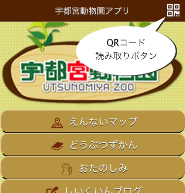
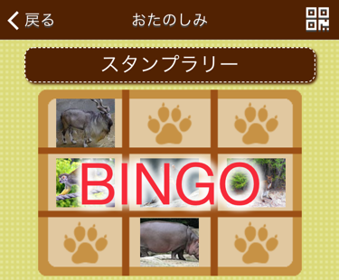

機能
- 園内マップ
- 宇都宮動物園の園内マップを表示します。
- 動物図鑑
- 宇都宮動物園で飼育している動物たちの説明を表示します。
- QRコード
- 園内の動物説明に貼ってあるQRコードを読み取ると動物の説明を見ることができます。
- QRコードで読み取るとスタンプラリーに参加できます。
- QRコードを読み取るには画面の一番上にあるQRコードアイコンをタップしてください。

- おたのしみ
- スタンプラリーでビンゴができるとすてきなプレゼントを差し上げます。
QRコード読み取り
アプリの右上にあるQRコード読み取りボタンをタップしてください。
園内の看板に添付されているQRコードを読み取ります。
読み取りに成功すると動物の詳細情報を見ることができます。
読み取った動物は自動的にスタンプラリーに登録されます。
スタンプラリー
おたのしみページを開いてください。
QRコードで読み取った動物が縦横斜めに３つそろうとビンゴが成立します。
ビンゴ画面を係員にお見せください。すてきなプレゼントを差し上げます。
スタンプラリーは日が変わるとリセットされます。
